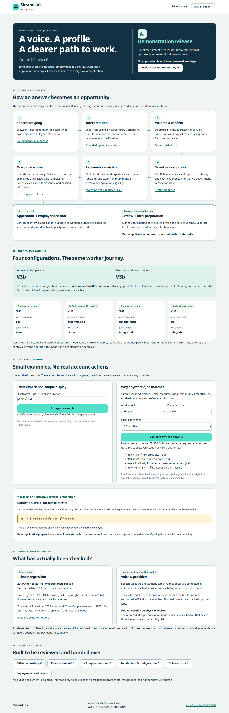
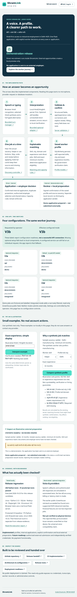
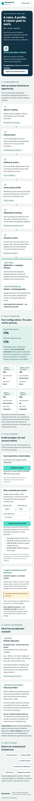
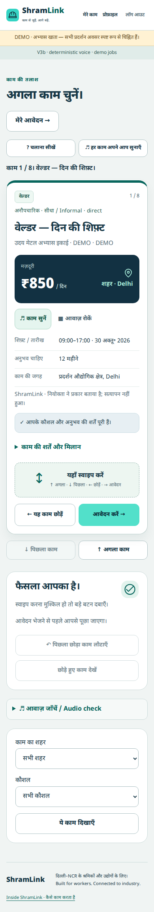

Inside ShramLink · 1440 × 1000
View inside-1440.png

Current release candidate. Synthetic accounts, real local Chromium layout; speech tests use simulated events. Full-page captures extend below the viewport. No physical-device or public-hosting claim.
Test report · Historical V2 → V3 comparison



